| どこで | アドレス | ひとこと |
|---|---|---|
| 受付PC | https://giiv6wcx.lamarck-lan.com:13800/ | 受付は必ずこちら。会計の呼び出し（Windows通知）が使えるのはこのアドレスだけです |
| 院内の他のPC・iPad | https://giiv6wcx.lamarck-lan.com:13800/ | 診察室・処置室はこちらで大丈夫です |
| 院外（自宅など） | https://serverpc.tail2de5bb.ts.net:8452/ | Tailscaleに入っている端末のみ。iPhoneで開けないときは http://100.111.66.29:3800/ |
パスコードは予約システムと同じもので、スタッフ全員が入れます。受付PCなど決まった端末では、院長のパスコードでログイン画面の「この端末で覚える」にチェックしてログインすると、次からはパスコードを入れずに開けます。診察室など、みんなで使う端末ではチェックしないでください。
いちばん上の検索欄にカルテNo.・飼い主さまの姓・ペットの名前のどれを入れても探せます。カルテNo.は ○○○○-2 のように、ハイフンの後ろが「その飼い主さまの何頭目か」です。枝番なしの番号や名前で探すと候補の一覧が出るので、開く子を押してください。ひらがな・カタカナのどちらでも探せ、「やまだ ぽち」のように姓とペットの名前を空白で区切ると絞り込めます。
検索欄を空のまま押すと、最近開いた子（この端末）が新しい順に20頭まで出ます。押すとその子が開きます。履歴はその端末だけに残り、一番下の［この端末の履歴を消す］で消せます。候補の一覧は、子を開いたとき・打ち直したとき・Esc キーで閉じます。
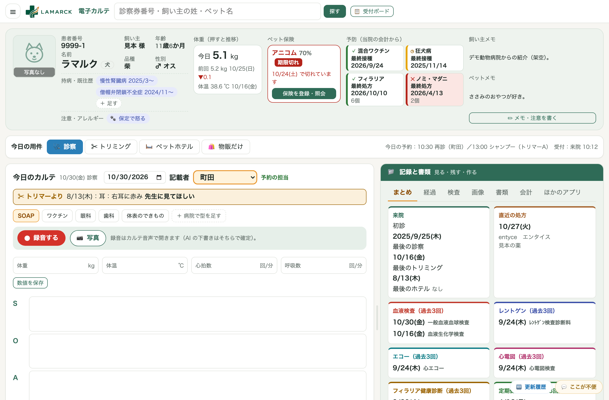
| 場所 | 何が出るか |
|---|---|
| いちばん上 | ≡ メニュー・検索欄・📋 受付ボード（会計待ちがあると赤い数字） |
| 上の帯 | 名前・犬猫・品種・性別・年齢・持病・既往歴・注意・アレルギー／体重（押すと推移）と最新の体温／ペット保険／予防（ワクチン・狂犬病・フィラリア・ノミマダニ）／メモ |
| 今日の用件 | 診察・トリミング・ペットホテル・物販だけ。今日の予約から自動で選ばれます。右に今日の予約と受付の時刻 |
| 今日のカルテ（左） | 記載者・数値（体重・体温・心拍数・呼吸数）・S/O/A/P。トリミングの日はトリミングノート、ホテルの日はホテルの欄に替わります |
| 記録と書類（右） | まとめ（最初に出ます）・経過・検査・画像・書類・会計・ほかのアプリ |
| 下の段 | 検査 → 処置 → 処方 → 会計。選んだ物がそのまま会計に入ります |
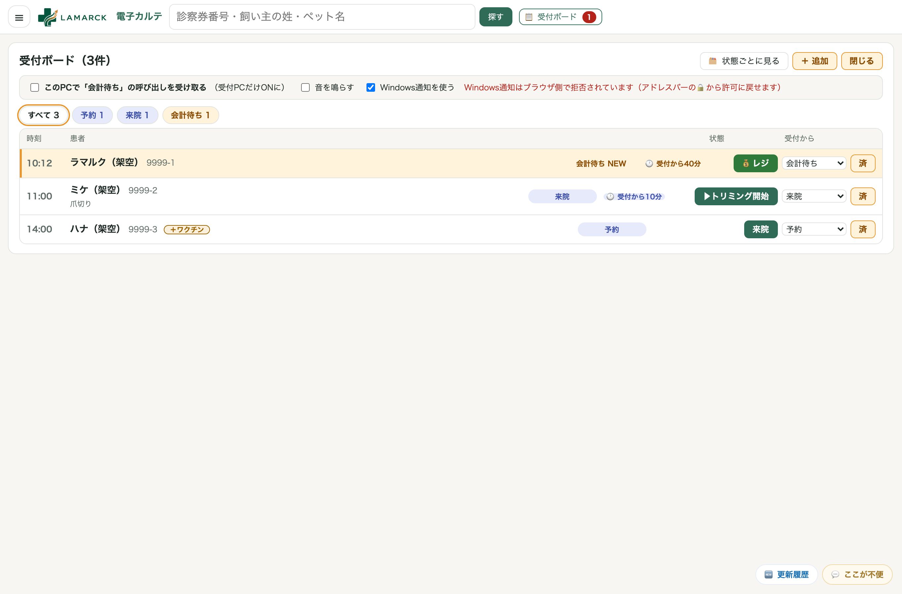
画面の上の［📋 受付ボード］（またはメニュー）から開きます。患者の画面の代わりに出て、［閉じる］か患者を探すと患者の画面に戻ります。今日の予約は朝、自動で並びます（再来機で受付すると自動で「来院」に進みます）。
| 列 | 内容 |
|---|---|
| 時刻 | 受付した時刻（まだ来ていない予約は予約時刻） |
| 患者 | 名前・カルテNo.・メモ |
| 状態 | 色つきの札。青＝待合／緑＝進行中／橙＝会計／灰＝終わり・赤＝未収 |
| 受付から | 来院・診察中・会計待ちは30分超で黄、1時間超で赤。トリミング中・ホテルなどは色を付けずに「院内○時間」 |
| 操作 | 次に進める青いボタン（▶診察開始・▶トリミング開始・✓会計待ちへ）・💰レジ（その子の会計の欄へ）・状態の変更・済 |
受付ボードの上の帯で、受付PCで1回チェックを入れるだけでずっと有効です。他のPCには出ません。
電話が鳴ると、受付PCの画面の左下に小さな札が出ます。札は30秒で消え、音は鳴りません。登録のある飼い主さまなら「☎ 着信 カルテNo. ○○○○ 様（ペットの名前）」と出て、押すとその患者が開きます。登録の無い番号は「☎ 着信 電話番号 登録のない番号です」。アーミクスの着信表示はこれまでどおり出ます。
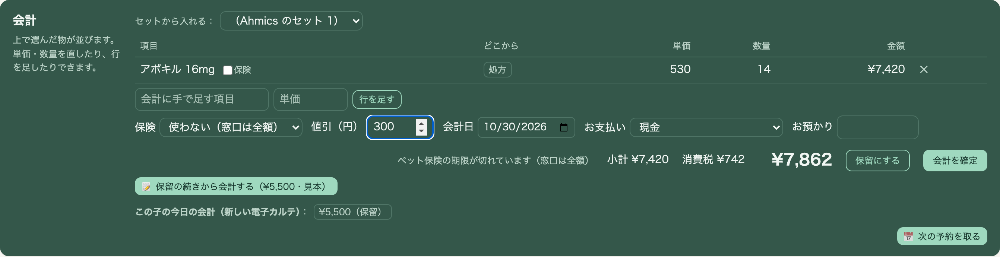
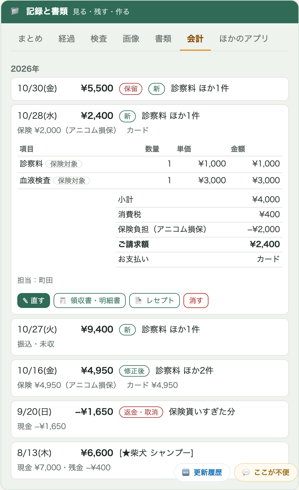
右の記録と書類 ＞ 会計に、Ahmics とこの電子カルテの会計が年ごとに新しい順で並びます。行を押すと明細が開きます。取り消し・修正前の会計は出していません（下の［表示する］で灰色で出ます）。
この電子カルテで入れた会計には、次のボタンが出ます。
| ボタン | できること |
|---|---|
| ✎ 直す／📝 続きから会計する | 会計の欄に戻して直し、確定で同じ会計を書き換えます（精算の後に直すと「直した履歴」に残ります） |
| 🧾 領収書・明細書／💊 薬袋／お薬説明書 | 出し直し（日付は会計日） |
| 📄 レセプト | 保険を使った会計の保険診療明細書。承認番号は会計に結んだ番号が入ります |
| 直した履歴 | いつ・誰が・いくらからいくらに直したか |
| 消す | 確かめてから消します。処方の薬の在庫の引き落としも戻ります |
| 入金を確かめて精算する | 振込（未精算）の会計に出ます。入金日を選んで精算 |
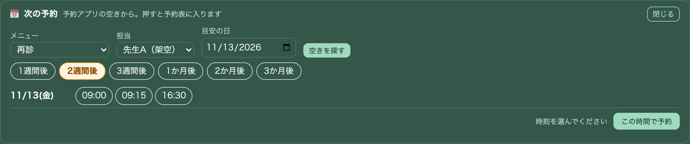
会計の欄の［📅 次の予約を取る］、予防の履歴の［📅 予約を取る］（ワクチン・狂犬病・フィラリア）、トリミングノートの［📅 この目安で予約］から開きます。メニュー・担当（前回の先生・トリマーが最初に入ります）・目安の日を選ぶと、前後の空きが最大3日分出ます。目安の日は1週間後・2週間後・3週間後・1か月後・2か月後・3か月後のボタンかカレンダーで選べます。時刻を押して［この時間で予約］で予約表に入ります。
メニューの🧪 検査取込トレイから。外注検査の結果はメールで届いたものが自動で取り込まれ、カルテNo.が分かるものはその子のカルテに自動で入ります。自動で判定できなかったものだけがここに残ります。［📄 開く］で中身を見て、カルテNo.を入れて［割当］。同じ結果を2頭に付けたいときは［コピー］、要らないものは［破棄］。［🧪 テスト送信］は検査会社の接続テストなので、ふだんは見なくて大丈夫です。
今日のカルテの記載者には、今日の予約の先生が最初から入っています（予約が無い日は、その端末で前に選んだ人）。選択肢は獣医師・動物看護師・受付です。予約の担当と違う人を選ぶと、欄の横に「⚠ 予約の担当は ○○ 先生です」と出ます（選び直しは止めません）。記載者は担当者ごとの売上にも使われます。
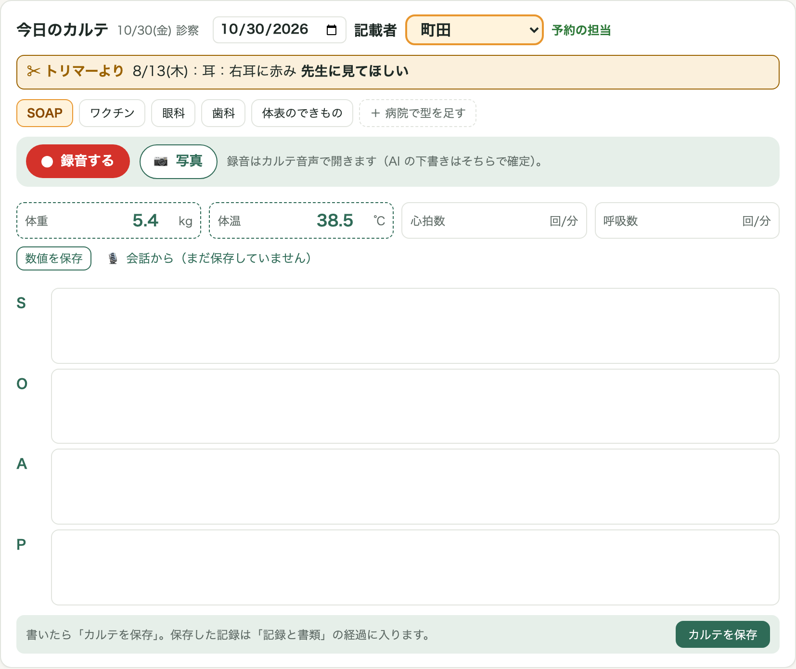
4つの欄に入れて［数値を保存］。体重は帯の体重に入ります。カルテ音声で録音すると、録音を止めた数秒後に、話した体重・体温が破線の枠で入ります（「🎙 会話から（まだ保存していません）」）。合っていれば［数値を保存］を押してください。押すまでは記録されません。前回の体重と10%以上違うときは ⚠ が出ます。
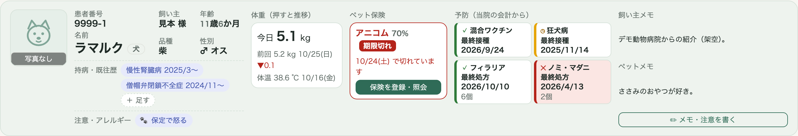
| 場所 | 見かた |
|---|---|
| 飼い主の名前 | 押すと顧客ペット台帳の窓が開きます。左＝飼い主（ふりがな・電話・家族の電話・住所・メール・割引率・要注意の札・LINE でつながっているかと家族の人数）、右＝この子（生年月日・性別・避妊去勢・マイクロチップなど）。見るだけです。直すときは Ahmics の顧客ペット台帳で直します（5分以内にこの窓に出ます） |
| 予防 | 最後に接種・処方した日。✓＝予防中・◷＝もうすぐ・✕＝切れています。フィラリアとノミマダニは個数も。兼用薬（スペクトラ等）は両方に入ります。押すと履歴が出ます |
| ペット保険 | 保険から出る割合・期間と、この保険期間に当院で保険を使った回数（同じ日は1回・他の病院の分は入りません）。［保険を登録・照会］で登録します。保険期間の始まりと終わりは必ず入れます（始まりを入れると、終わりに1年後の前の日が自動で入ります）。始まりが無い子は「保険期間の始まりを登録すると、使った回数が出ます」と出ます。登録した子は［有効性を照会（アニコム・アイペット）］で、今日使える契約かを保険会社のサイトで確かめられます（1分ほど・承認番号は取りません）。アイペットは通院・入院・手術の残り、アニコムは手術の残りも出ます。アイペットは照会するとアイペット側に履歴が1件残ります |
| ペットの写真 | 次の順で1枚出ます。①トリミングの写真（いちばん新しい物・「✂ 11/1」のように撮影日）②飼い主さまがマイページで登録した写真 ③院内で撮った写真。写真を押すと3つを見比べられ、［院内で撮る・選ぶ］（iPhone・iPad のカメラか写真から選び、正方形に切り抜き）と院内の写真を消す（2回押す）ができます。トリミングやマイページの写真があれば、そちらが先に出ます |
| 帯の下 | 🕐 受付から ○分（今日受付してまだ終わっていない子だけ・30分で黄・60分で赤）・次の予約（今日より後を3件まで）・同居の子のボタン（押すとその子のカルテが開きます）・ご紹介の確認があるときのお知らせ |
| 注意・アレルギー | アレルギー・副作用・禁忌・🐾取扱注意（咬む・保定で怒る）。触る前に必ず見てください |
| メモ | 飼い主メモ・ペットメモ・飼主対応メモ（院内だけ） |
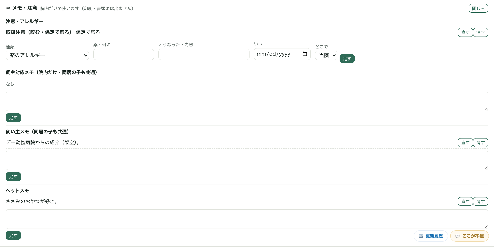
帯の［✏ メモ・注意を書く］で、注意・アレルギー・飼主対応メモ・飼い主メモ・ペットメモを足す・直す・消すができます。院内だけで使い、紹介状・領収書・証明書には出ません。
問診票にご紹介の記入がある子は、この窓の下に「ご紹介の確認」が出ます。候補からご紹介くださった方を選ぶと、飼い主メモに残ります。
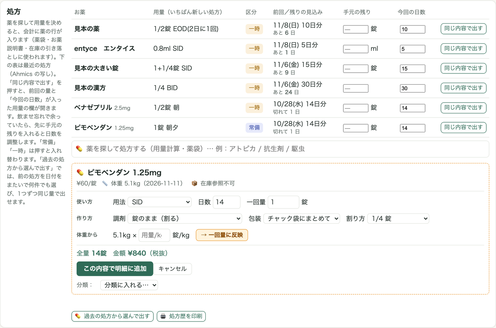
下の段の処方の表は、その子の最近の処方です。お薬の列は名前だけで、後ろの規格（1.25mg など）は小さい灰色で出ます。「前回／残りの見込み」は、前回の日付と日数分、その下に残りの日数（切れていれば「切れて ○ 日」）です。
用量の欄は、名前の下に単価・体重（古いと赤い注意）・在庫が出て、その下が3段です。
| 名札 | 入れること |
|---|---|
| 飲ませ方（飲み薬と分かる薬）／使い方（外用薬・目薬など、それ以外） | 用法・日数・一回量 |
| 作り方 | 調剤（錠のまま・粉にして分包・液に）・包装・割り方（1/2〜1/10錠） |
| 体重から | mg/kg（錠/kg）を入れて［→ 一回量に反映］。薬剤マスタの承認済みの量も出ます |
全量と金額はボタンのすぐ上に出ます。［この内容で明細に追加］で会計に薬の行が入り、確定の後に薬袋・お薬説明書を印刷できます。
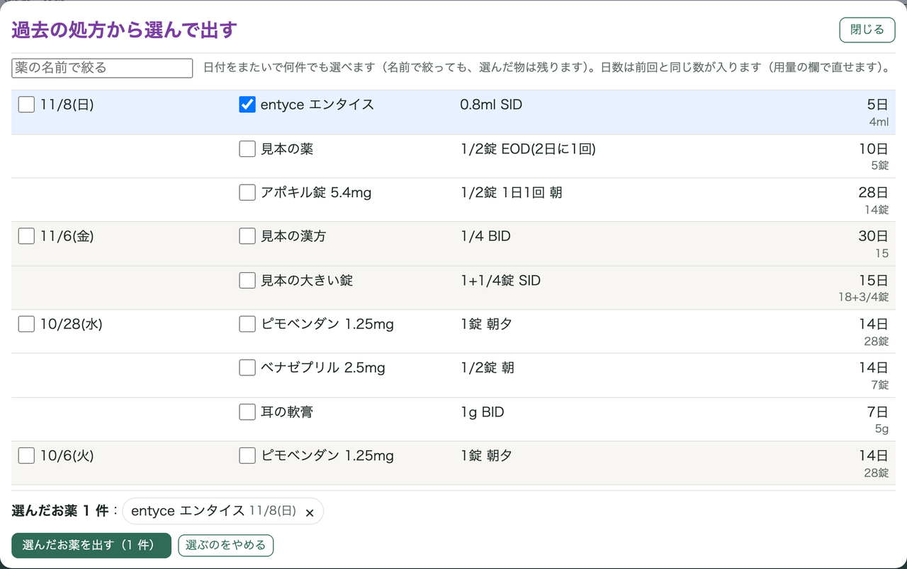
［💊 過去の処方から選んで出す］を押すと、全部の期間の持ち帰りの処方が日付ごとに出ます。
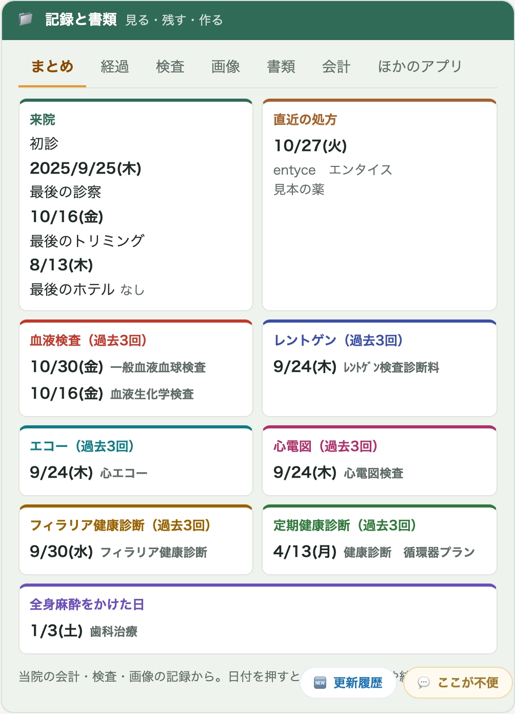
| タブ | 内容 |
|---|---|
| まとめ | 初診・最後の来院（診察・トリミング・ホテル）・直近の処方・血液/レントゲン/エコー/心電図/フィラリア健診/定期健診の過去3回・全身麻酔の日・抗体価（外注の富士フイルムVET と院内の VacciCheck）・フード・サプリの購入歴（品名ごとに最後に買った日と回数）。日付を押すとその日のカルテや結果へ |
| 経過 | 来院ごとの記録。診療・トリミング・ホテル・新しいカルテ・他院からのご紹介で絞れ、「この子の記録を探す」でことば検索（「膝 手術」のように並べて）。本文は項目ごとに1行で出ます。［全部を読む］か本文を押すと、その日の記録が全部出ます（もう一度押すと閉じる）。古い日も全部並びます |
| 検査 | 表と推移グラフ。［🖨 この表を印刷］。日付を押すとその日の結果を全部（マイページへ送るのもここから・4-7） |
| 処方 | 全部の期間の処方。日付ごとと薬ごと（回数・初めて出した日・最新の用量）を切り替えて、名前で絞れます。院内で使った分は最初は出しません。［🖨 処方歴を印刷］。まとめの「直近の処方」を押すと、この表のその日に移ります |
| 画像 | レントゲン・エコー。撮影ごとに並び、2枚以上撮った日は「全13枚」のように枚数が出ます。押すと大きく出て、［‹ 前］［次 ›］・キーボードの ← →・iPad は左右になでると、その日の画像を順に見られます |
| 書類 | 紹介状・報告書・写真・証明書。間違えて入れた書類は［消す］ |
| 会計 | 過去の会計（3-5） |
尿・便の検査を入れる
入れた結果は、窓の下の日ごとの［✎ 直す］［消す］で直せます。［消す］は2回押すと消えます。
抗体価（VacciCheck）を入れる
検査の結果と、トリミング・ホテルの写真は、この画面から飼い主さまのマイページへ送れます。
検査の結果を送る（獣医師）
トリミング・ホテルの写真を送る（トリマー・ホテル担当）
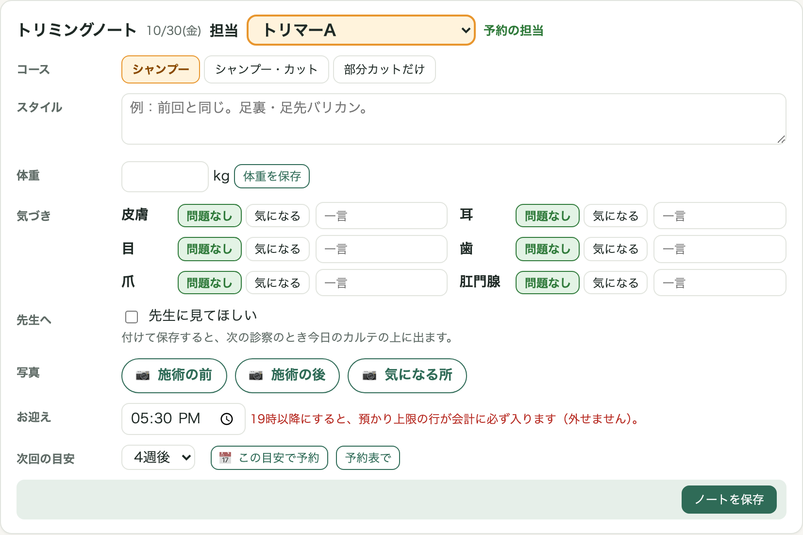
| 出す物 | どこから | ひとこと |
|---|---|---|
| 紹介状・経過報告書・セカンドオピニオン依頼 | 書類 ＞ ［＋ 紹介状を作る］ | 下の 6-1。先方の病院の書式に書いて出すこともできます |
| ワクチン接種証明書・狂犬病予防注射済証 | 書類 ＞ ［💉］［🐕］ | 最後の接種日・ワクチン名・次回の時期が最初から入ります。ロット・獣医師を足して印刷。写真は帯の写真（トリミング→マイページ→院内で撮影の順）が最初から入り、［📷 写真］で選び直せます |
| カルテ印刷 | 経過 ＞ ［🖨 カルテを印刷］ | 各日に印を付けて、選んだ日だけを1枚の診療記録に |
| 検査の表・処方歴 | 検査 ＞ ［🖨 この表を印刷］／処方 ＞ ［🖨 処方歴を印刷］ | 今見ている表のまま |
| 領収書・明細書・薬袋・お薬説明書・レセプト | 会計の欄・会計のタブ | 3-4・3-5 |
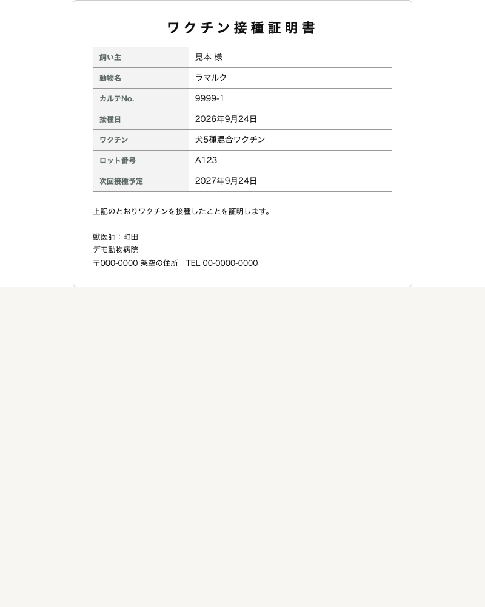
3つの種類の使い分け（2026年11月8日〜 種類で欄と書き方が変わります）
| 種類 | だれに・何のため | 当院の書式の欄 |
|---|---|---|
| 紹介状（診療情報提供書） | 当院 → 二次診療施設・大学・他院へ、検査や治療をお願いする。行き先が決まっていない（飼い主さまが探す）ときもこれ | 紹介の目的・診断（疑い）・経過・現在の状態・現在の処方・お願いしたいこと |
| 経過報告書 | 当院に紹介してくださった病院（紹介元）へ、当院で診た結果を返す（返書） | ご紹介へのお礼・診断・当院での検査・治療と経過・現在の状態・今後の方針（先生へのお願い） |
| セカンドオピニオン依頼 | 当院で治療を続けながら、ほかの先生にご意見をうかがう | ご相談したいこと・診断（疑い）・これまでの検査と治療・現在の状態・ご意見をいただきたい点 |
場面ごとの手順
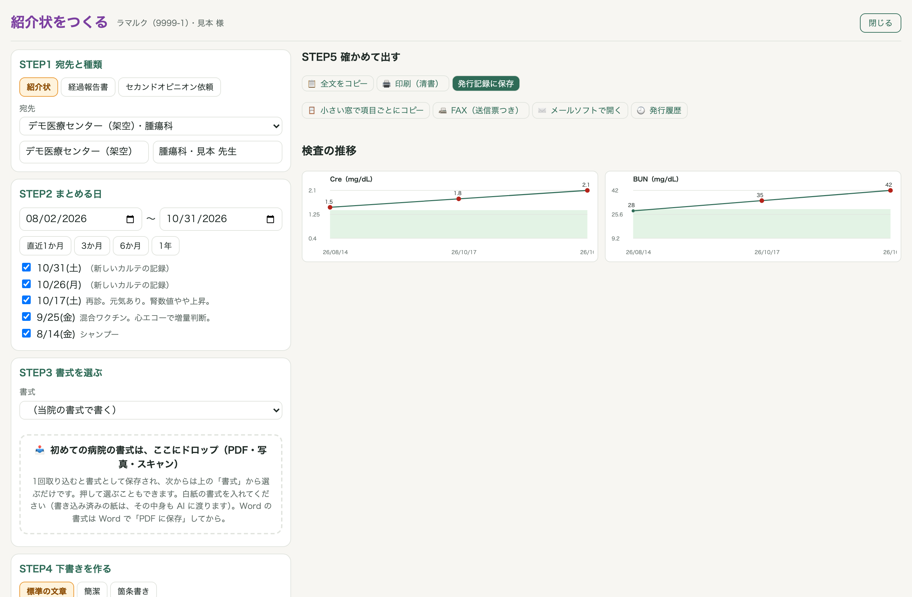
| STEP | すること |
|---|---|
| STEP1 宛先と種類 | 紹介状・経過報告書・セカンドオピニオン依頼を選び、宛先を選ぶ（宛先は ⚙ 設定で登録。FAX 番号とメールも入れておくと、FAX 送信票とメールに自動で入ります）。行き先が決まっていないときは宛先を空のままにすると「ご担当の先生 御侍史」になります（本文・FAX 送信票とも） |
| STEP2 まとめる日 | まとめる来院日に印。「直近1か月」などのボタンでまとめて選べます |
| STEP3 書式を選ぶ | 当院の書式で書くか、先方の病院の書式を選ぶ（6-2） |
| STEP4 下書きを作る | 要望（目的・伝えたい要点・詳しく書かなくてよい事）を書いて［材料を整理する（AI）］（1分ほど）。選んだ日の記録から AI が項目（病名・病状・手術と処置・検査・投薬・一般状態）を抜き出し、要望からメイン／補足／載せないを提案します。押して直す・文を直す・カルテに無い事は［＋ 項目を足す］（「先生の追記」の印）→［この内容で下書きを作る］。急ぐときは［急ぎ：整理せずに下書き］で1回で作れます。「貼る画像」で印を付けた書類（外注の検査結果などの PDF・写真）と［📎 ファイルから貼る］の書類も AI が読み、項目に「書類から」の印で入ります（書類があると2分ほど）。AI には飼い主さま・ペットの名前は渡しません。作っている間はボタンに「⏳ …○秒」と黄色の帯が出ます。できると画面が STEP5 に動きます |
| STEP5 確かめて出す | 右の列（画面が狭いときは下）で下書きを読み、【要記入】や中身を直してから出す（6-3） |
欄ごとに載せる・載せない、担当医、結びの文（2026年11月11日〜）
| ボタン | 使う場面 |
|---|---|
| 📄 先方の書式で印刷・PDF | 先方の書式を選んだとき。書式の紙の上に、欄ごとに文字を重ねて出します。PDF にするときは印刷の画面で「PDF に保存」。枠に書き切れない欄があると名前が出るので、枠を大きくするか文を短くしてください |
| 🖨 印刷（清書） | 当院の書式で印刷・PDF |
| 📠 FAX（送信票つき） | 1枚目が FAX 送信票（宛先の FAX 番号・送信元・担当・件名）、2枚目から本文。複合機の FAX で送ります |
| 🪟 小さい窓で項目ごとにコピー | 先方の Web 予約画面（Web フォーム）に入れるとき。細長い窓に欄ごとの［コピー］が並ぶので、先方の画面の横に置いて上から順に貼ります。コピーした欄は薄くなります |
| ✉️ メールソフトで開く | 宛先のメールアドレス・件名・本文が入った状態でメールソフトが開きます（本文が長すぎるときは［📋 全文をコピー］で貼り付け） |
| 発行記録に保存／🕘 発行履歴 | 印刷・FAX・メール・先方の書式で出すと自動で発行記録に残ります（同じ本文・同じ出し方は1回だけ。記載者を選んでいないときは残りません）。［発行記録に保存］で手でも残せます。［🕘 発行履歴］でこの子に出した書類を新しい順に読めます |
| 📱 マイページへ PDF で送る | 清書を PDF にして、飼い主さまのマイページの「お渡し」へ送ります。押すと窓の中に届く PDF の全ページが出るので、確かめてから先生のひとこと（任意）を書いて［この PDF を送る］。LINE を連携しているご家族全員にお知らせが届きます（夜は翌朝）。送った書類は発行記録に残り、同じ文はもう一度は送れません |
マイページへ送った書類（届いた・開いた）：STEP5 の「📱 マイページへ送った書類」に、1通ずつ送った時刻・LINE のお知らせの時刻・飼い主さまが開いた時刻と回数（まだなら「まだ開いていません」）が出ます。［↻ 最新にする］で読み直します。お渡しを取り消した書類は「取り消し済み」。
STEP4 の下の「当院の書式で出すときだけ：貼る画像」「…：計測値の推移」で選んだ物が、STEP5 の下書きの後ろ・清書・FAX に入ります。先方の書式で印刷するときは入りません。
| 貼りたい物 | すること |
|---|---|
| 書類の写真・PDF（外注の検査結果・病理の結果など） | 「貼る画像」の一覧で印を付けます。PDF には PDF の印があり、ページごとの画像になって貼られます（6ページまで） |
| エコー・レントゲン | 「エコー・レントゲン」の撮影の行で［▶ 開く］→ その撮影の画像が全部並ぶので、使う画像に印。説明は「撮影日（何枚目／全部の枚数）」になります |
| 手術・歯科処置などの写真（画像システムの写真フォルダ） | 「写真フォルダ（歯科・麻酔下画像・他院取り込み）」の日付の行で［▶ 開く］→ その日の写真が小さな絵で全部並ぶので、使う写真に印。説明は「日付 分類（何枚目／全部の枚数）」になります。行が出ないときは、画像システムにその子の写真が無いか、画像システムが止まっています |
| カルテに入っていない PDF・写真 | ［📎 ファイルから貼る（PDF・写真）］でこの端末のファイルを選びます。この報告書にだけ貼られ、カルテの書類には保存されません |
| 腫瘤の大きさなどの推移 | ［📏 計測値の推移を足す］→ 項目名（例：脾臓の腫瘤（最大径））・単位・日付と値を入れ、行ごとに出どころ（当院の計測／かかりつけ医より（口頭）／その他）を選びます。1行目は「かかりつけ医より（口頭）」、2行目からは「当院の計測」が最初に入っているので、違うときは選び直してください。2行以上で折れ線グラフも付きます |
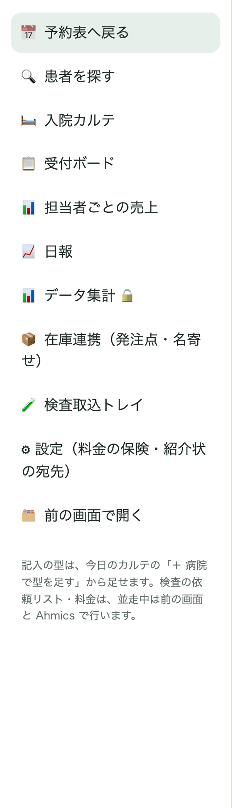
| メニュー | 内容 |
|---|---|
| 📈 日報 | 日付を選んで、請求計・現金・カード・保険・分類別の売上 |
| 📊 データ集計 🔒 | 経営パスコードを画面の欄に入れて開きます。月次サマリー・期間・年度・推移・患者数とリピート・予防・地域・CSV・印刷・🔒ロック |
| 📊 担当者ごとの売上 | 期間を選び、人ごとに診察・トリミングの売上（この電子カルテの会計・税抜）。行ごとに、トリミングの項目は担当トリマー、それ以外は記載者に付きます。物販・ホテルは誰にも付けません |
| 📦 在庫連携 | 発注点割れ・自動で減らした記録・🔗 名寄せ（処方の薬と在庫の品目を結ぶ。入数の上書きはその行の欄で） |
| ⚙ 設定 | 料金の項目ごとの保険の対象（「保険の会計 ○回のうち○%が対象」を見ながら付け外し・料金表に戻す）・お薬ごとの保険の対象・対象外（7-1）・病院の情報（メール・休診日＝紹介状の欄に入ります）・紹介状の宛先（足す・直す・消す）・カルテから予約を取るときの担当（院長2の列に印を付けて［保存］すると、次の予約の小窓の担当に出ます。記載者を選んでから保存） |
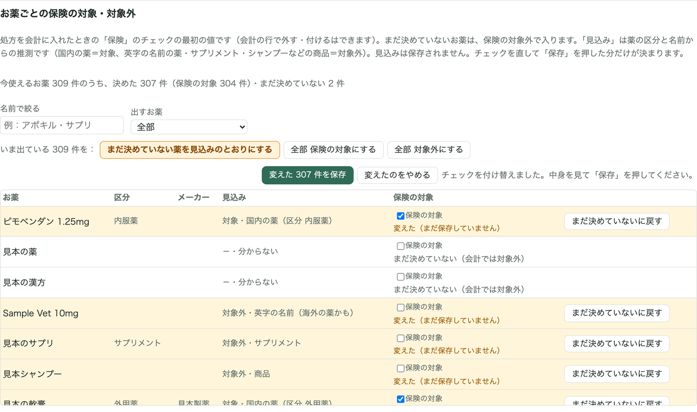
処方を会計に入れたとき、「保険」のチェックが最初から付くかどうかを薬ごとに決めます。今使えるお薬（Ahmics で表示中の薬）が全部1つの表に並びます。
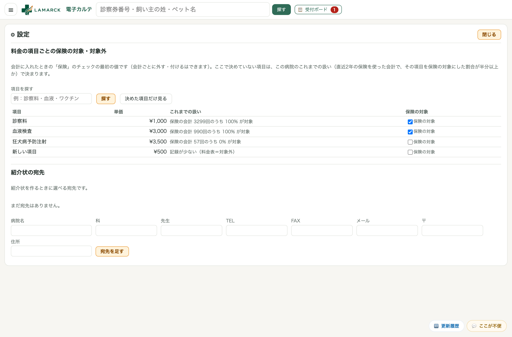
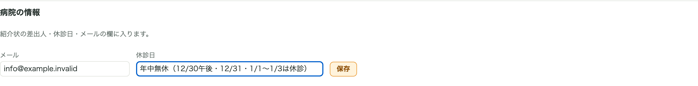
画面の右下の［💬 ここが不便］から、使っていて困ったことをそのまま書いて送れます。院長に届き、そのまま改善に入ります。［🆕 更新履歴］で最近変わったことが見られます。
メニューの［❓ ヘルプ］（または F1・? キー）で、このガイドの中身をことばで探せます。調べたい操作の名前を入れると、その説明の節が上に出ます。
| 症状 | どうするか |
|---|---|
| 「患者が見つかりません」 | カルテNo.の桁を確認。枝番（-2 など）を外すか、飼い主さまの姓・ペットの名前で探してください |
| 記載者が空のまま／「選んでください」 | 今日の予約が無い日です。記載者の欄で選んでください |
| 「⚠ 予約の担当は ○○ 先生です」と出る | 予約の担当と違う人を選んでいます。合っていればそのままで大丈夫です |
| 保険を使ったのに保険の負担が少ない | 会計の各行の「保険」のチェックを確かめてください。毎回同じなら⚙ 設定でその項目の保険の対象を決めてください |
| 体重・体温の候補が入らない | 録音を止めて文字起こしが終わるまで数秒〜かかります。多頭の診察は、要点ができてから入ります（体温は入りません） |
| 次の予約で空きが出ない | 予約システムが開けている期間の外か、ネット予約に出していないメニュー・担当です。予約表で取ってください |
| 会計の呼び出しが出ない | ①受付ボード上部のチェック ②https://giiv6wcx.lamarck-lan.com:13800/ で開いているか ③ブラウザで通知を「許可」したか |
| 受付PCで毎回パスコードを聞かれる | ログイン画面の「この端末で覚える」にチェックしてログインし直してください（決まった端末だけ） |
| Ahmics に入れた検査値・カルテが出てこない | コピーは2時間ごと（9・11・13・15・17・19時）です。次のコピーのあとに患者を開き直してください |
| 間違えて保存した | カルテ・体重・メモ・書類・会計は直す・消すができます。分からなければ消さずに院長へ |
| 画面が真っ白／表示が古い | いちど再読み込み（⌘R / Ctrl+R）。それでも直らなければ「ここが不便」か院長へ |
| 先方の書式を落としても取り込めない | 出た文の（ ）に止まった所が出ます（紙を画像にする所／AI の読み取り／枠を置いて保存する所）。その文を院長へ |
| 先方の書式で印刷すると字が枠からはみ出す・小さい | ［✏️ 書き込む場所を直す］で枠を大きくするか、STEP5 で文を短くしてください。前に取り込んだ書式は、［🗑 一覧から消す］→ 落とし直すと新しい置き方になります |
| 前の画面を使いたい | ≡ メニューの「🗂 前の画面で開く」。前の画面にしか無いのは、検査の依頼リストだけです（ポイントカードは予約アプリで始めたときに新しい画面に出ます） |